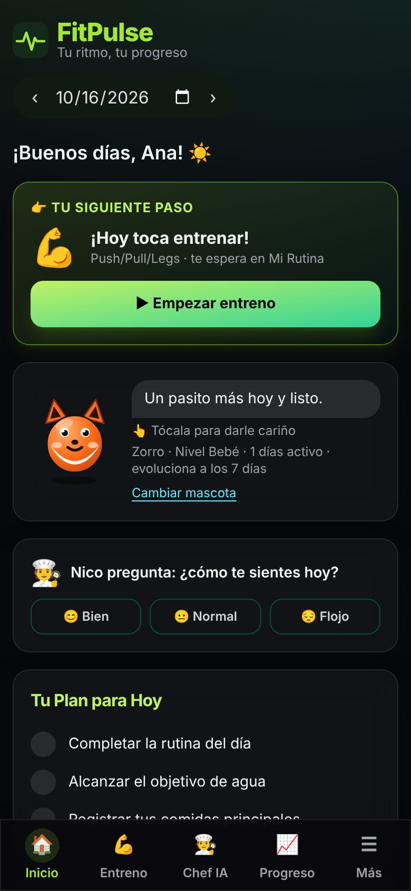
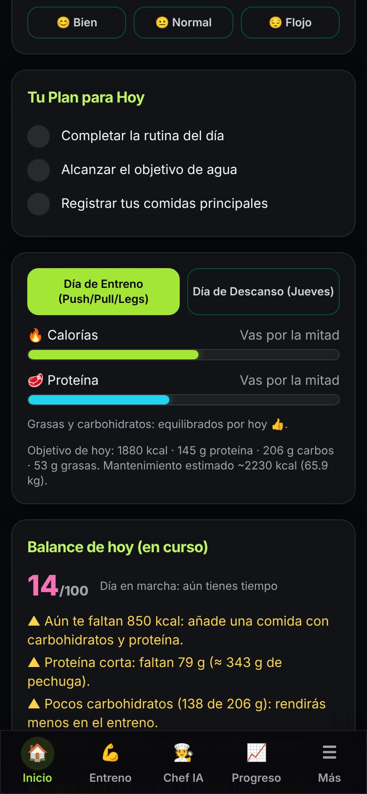
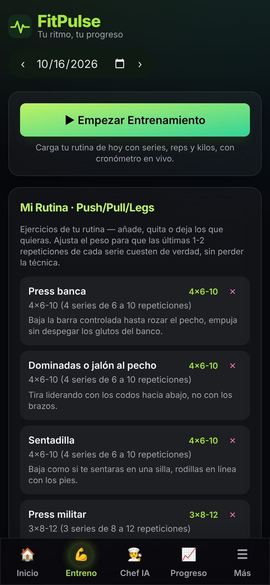
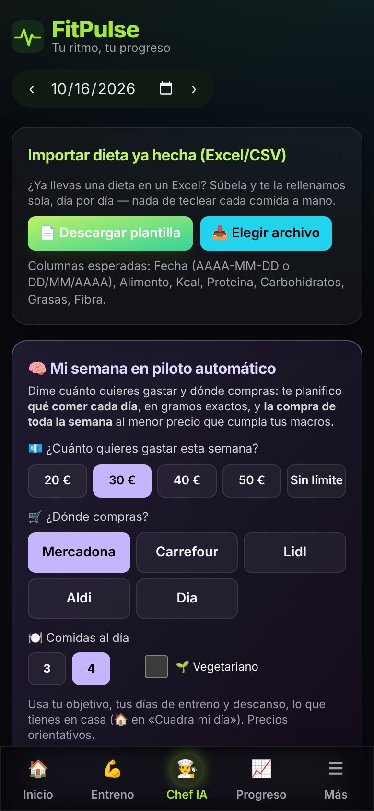
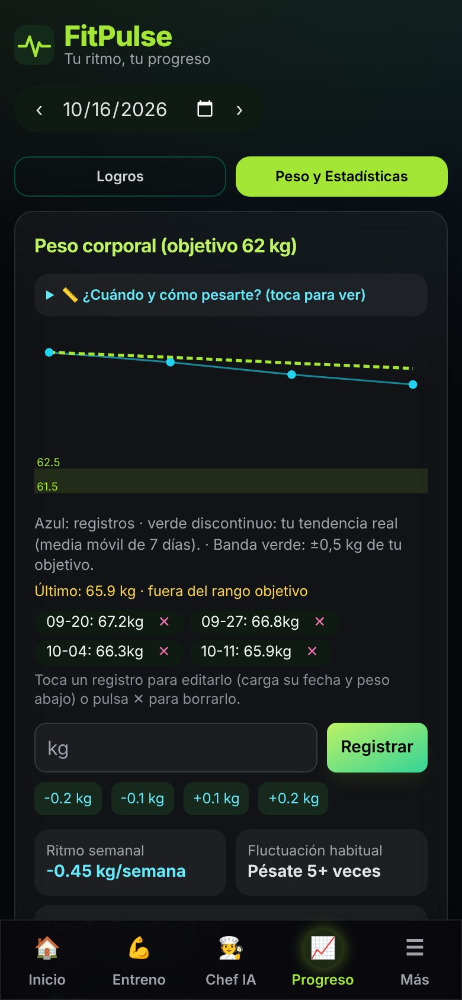

Entrena y come bien sin saber de fitness
FitPulse te dice qué comer, cuántos gramos y cómo entrenar hoy, con lo que tienes en casa y lo que te cabe en el bolsillo. Tu entrenador, tu nutricionista y tu lista de la compra en una sola app.
Funciona en Android, iPhone y ordenador. Sin descargar nada de una tienda.

Empezar a cuidarse no debería ser tan difícil
Las apps de fitness están hechas para quien ya sabe. Si empiezas de cero, te encuentras con esto:
Macros, TMB, déficit, 4×8-12… Nadie te explica qué significa ni qué hacer con ello.
Planes con salmón y quinoa cuando tienes 30 € para la semana y una nevera de piso de estudiantes.
Mucho que apuntar, poca recompensa y ninguna pista de cuál es el siguiente paso.
Cómo te ayuda FitPulse
Una sola idea: abrir la app y saber exactamente qué hacer ahora.
Una tarea clara cada vez que la abres
En vez de un panel lleno de números, FitPulse te propone una sola acción: un vaso de agua, tu entreno o tu cena. La haces, ganas una recompensa y tu mascota lo celebra contigo.
- Calorías y macros calculados para ti, con límites seguros
- Racha, medallas y una mascota que crece contigo
- Recordatorios suaves de agua y entreno

Tu rutina explicada como te la explicaría un amigo
Cada ejercicio con su técnica en una frase, y la notación del gimnasio traducida: «4×6-10» es «4 series de 6 a 10 repeticiones». Cronómetro, descanso entre series y récords incluidos.
- Push/Pull/Legs, Fullbody, calistenia, cardio o sin rutina
- Aviso de descanso entre series
- Gráfica de fuerza para ver que progresas

Tu semana planificada al mejor precio
Dile cuánto quieres gastar y dónde compras. FitPulse te planifica qué comer cada día, en gramos exactos, y la lista de la compra de toda la semana que cumple tus macros.
- Mercadona, Carrefour, Lidl, Aldi o Dia
- Con lo que ya tienes en casa («Cuadra mi día»)
- Vegetariano y alergias tenidos en cuenta

La tendencia real, no el susto de un día
El peso sube y baja por el agua o la sal. FitPulse te enseña la media de 7 días, tu ritmo semanal y te avisa si vas demasiado rápido, para que no pierdas músculo ni la motivación.
- Guía de cuándo y cómo pesarte
- Medidas de cintura, brazo, pecho y muslo
- Fotos de progreso que se quedan en tu móvil

💚 Modo Cuídate: una app de fitness que no hace daño
Contar calorías no es bueno para todo el mundo. Para quien tiene una relación difícil con la comida o con su cuerpo, FitPulse tiene un modo sin números, sin báscula y sin metas de peso.
Además, la app nunca propone comer menos a menores de edad ni a personas con peso bajo, y nunca recorta calorías si te pasas un día.
Hecha con cuidado
Lo que hay detrás de cada número que te enseña la app.
Tenla en tu móvil en 20 segundos
Escanea el código con la cámara o abre aaapruebaaa67-source.github.io/fit1. Después:
Preguntas frecuentes
¿Es gratis de verdad?
Sí. Sin anuncios, sin suscripción y sin funciones bloqueadas.
¿Tengo que saber de nutrición o de gimnasio?
No. Está pensada para quien empieza: cada término viene explicado y tiene un glosario con las palabras que verás.
¿Qué pasa con mis datos?
Se guardan en tu móvil y, si inicias sesión, en tu cuenta para no perderlos. Las fotos de progreso no salen de tu dispositivo. No se venden ni se comparten con nadie. Puedes descargarlos o borrar tu cuenta cuando quieras.
¿Sustituye a un nutricionista o a un médico?
No. FitPulse da estimaciones orientativas para empezar con buenos hábitos. Si tienes una condición médica o un trastorno de la conducta alimentaria, consulta a un profesional; la app te ayuda a compartir un resumen con tu equipo de salud.
¿Funciona sin internet?
Sí. Una vez abierta, puedes apuntar comidas y entrenos sin conexión; se sincronizan cuando vuelves a tener red.
Tu primer paso dura 10 segundos
Abre la app, responde 5 preguntas y te decimos qué hacer hoy.
Empezar gratis